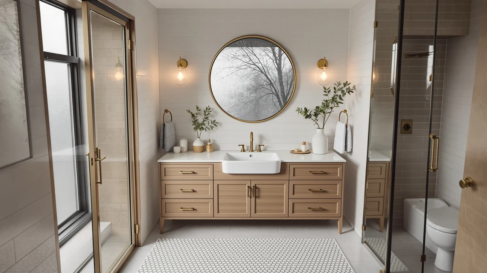

Amerlife Farmhouse Sink Bathroom Vanity Review (2026): Worth It?
Prices and picks verified as of November 2026. Independent, reader-supported reviews.


Quick Answer
In this Amerlife Farmhouse Sink Bathroom Vanity review, the AMERLIFE 48 inch Brown Farmhouse Sink vanity costs $449.99 and pairs an apron-front farmhouse sink with an MDF and engineered wood cabinet. It lands in the same $439.99 to $449.99 range as the CARPETNAL, Quicklock, and Oakvera alternatives below, so the real decision comes down to width and sink style rather than price.
Our pick: AMERLIFE 48" Brown Farmhouse Sink — $449.99 Check Price on Amazon
Bottom line: our top pick is the AMERLIFE 48" Brown Farmhouse Sink Bathroom Vanity at $449.99.
Things to Know Before You Buy
- Price barely moves across this comparison. The AMERLIFE and CARPETNAL both list at $449.99, Quicklock sits $5 lower at $444.99, and Oakvera is the cheapest at $439.99.
- Width varies more than price does. The AMERLIFE runs 48 inches while the CARPETNAL and Oakvera both stretch to 60 inches, so measure your bathroom wall before you compare prices.
- The AMERLIFE pairs its cabinet with a farmhouse apron-front sink, a styling detail the CARPETNAL and Oakvera listings don't mention.
- Quicklock ships as an RTA (ready-to-assemble) kit, a build format the other three listings don't carry.
- None of the four vanities in this review currently shows a public star rating or review count on Amazon, so you're weighing materials and price rather than years of owner feedback.
- All four vanities ship from Amazon with standard shipping, so delivery timing shouldn't factor into which one you choose; focus your comparison on width, material, and the apron sink detail instead.
This Amerlife Farmhouse Sink Bathroom Vanity review looks at where the AMERLIFE 48 inch Brown Farmhouse Sink vanity lands among a small cluster of vanities priced within eleven dollars of each other. This 48 inch model packs a farmhouse apron-front sink into a narrower footprint than the 60 inch competitors covered below. Shoppers comparing it usually already know how much wall space they have, since a vanity this specific only fits certain layouts.
The short version: the AMERLIFE costs the same as the CARPETNAL, a few dollars more than the Quicklock RTA kit, and about ten dollars more than the Oakvera, but it is the only one of the four built around a farmhouse apron sink. It loses points on track record, since Amazon hasn't collected a public rating for the listing yet. The real differences are width and sink style, not price, so match those to your own bathroom instead of guessing from a photo.
Why You Should Trust Us
Ilane Tall covers bathroom vanities and fixtures for Best Bathroom Vanities and put together this Amerlife Farmhouse Sink Bathroom Vanity review by comparing listed materials, current Amazon pricing, and verified owner feedback where it exists, rather than repeating manufacturer copy. We do not run a fake testing lab and don't claim to have installed any of the vanities covered here. Instead, we check dimensions, construction details, and pricing against what owners report after living with similar pieces, and we say plainly when a listing doesn't yet have enough review data to back a confident recommendation. You can check the same sources we used by opening any Amazon listing and scrolling to the ratings section yourself, and when that section is empty, as it is for every vanity in this review, you'll see the exact gap we're flagging.
Our Research Experience
This Amerlife Farmhouse Sink Bathroom Vanity review does not involve physical testing. We compared the AMERLIFE 48 inch Brown Farmhouse Sink vanity against the three closest-priced alternatives using each listing's stated materials, dimensions, and construction details, then checked every listing for verified owner reviews. None of the four currently carries a public rating or review count on Amazon, so this comparison rests on manufacturer specs and pricing rather than years of buyer feedback. When that happens, we note the gap directly instead of inventing a track record that doesn't exist, and we will update this review if any of these listings pick up verified ratings later.
Overview & Specs

AMERLIFE 48" Brown Farmhouse Sink
What we like
- Farmhouse-style apron-front sink built into the cabinet, a detail the CARPETNAL and Oakvera listings don't offer
- Priced at $449.99, matching the wider 60 inch CARPETNAL despite the narrower footprint
- Sold as a finished piece rather than the ready-to-assemble kit Quicklock ships
Flaws but not dealbreakers
- MDF and engineered wood construction needs prompt cleanup of standing water, unlike solid hardwood
- No public rating or review count on the Amazon listing yet, so there's no verified owner track record to lean on
- 48 inches of width gives up 12 inches of counter space compared to the CARPETNAL and Oakvera, so measure first
| Material | MDF / engineered wood |
| Size | 48“ |
The AMERLIFE 48 inch Brown Farmhouse Sink vanity is the narrowest of the four options in this Amerlife Farmhouse Sink Bathroom Vanity review, and the only one built around an apron-front farmhouse sink. The cabinet combines MDF and engineered wood, a build that keeps the price near $450 while still supporting the paneled, farmhouse-inspired look that buyers tend to search for. At $449.99 it matches the CARPETNAL on price despite its smaller footprint, and it skips the assembly step the Quicklock kit requires.
Review history is the AMERLIFE's weak spot. Amazon shows no rating or review count on this listing, so you're evaluating it on stated materials and width rather than years of buyer feedback the way a more established listing would allow. MDF and engineered wood construction also asks for more care around the sink basin than solid wood, since the core swells faster if water sits on the surface. If your bathroom can spare more width, or you'd rather buy from a listing with a proven review history, the alternatives below are worth comparing before you commit.
What We Liked
Across this Amerlife Farmhouse Sink Bathroom Vanity review, the AMERLIFE's apron-front sink and price stand out most. A farmhouse vanity with a built-in apron sink at this price is harder to find than a plain flat-front cabinet, since the wider competitors covered here skip the apron detail entirely. The fact that it arrives as a finished piece, rather than the RTA kit Quicklock ships, also saves the assembly work that flat-pack alternative requires. Matching the CARPETNAL's price while adding the farmhouse sink detail is a straightforward win for anyone who already has a 48 inch run of wall. The brown finish listed on this model also reads as a warmer, more traditional tone than the lighter cabinets some farmhouse shoppers default to, which gives you a second styling decision beyond just the apron sink.
What Could Be Better
The biggest gap is review history. Because the listing hasn't accumulated a public rating, you can't lean on owner comments the way you could with an established vanity, so part of the decision rests on trusting the stated materials. MDF and engineered wood construction, even when well-made, also asks for more care around standing water than solid wood, which matters in a bathroom that sees daily use. Buyers who want photographic proof of how the finish ages over a few years won't find that here yet, simply because the listing is too new to have generated it. The 48 inch width also means twelve fewer inches of counter and storage than the CARPETNAL or Oakvera, so weigh that trade-off against the farmhouse sink detail before you buy. A household with two people sharing one sink basin each morning may find that narrower countertop tighter than a 60 inch layout allows, so factor daily routine into the decision alongside the styling.
Who Is It For?
This farmhouse vanity suits a bathroom with around 48 inches of wall space and a preference for an apron-front sink over a standard drop-in basin. It fits buyers who want a finished piece out of the box and would rather skip the RTA assembly step the Quicklock alternative needs. It's a weaker fit for a bathroom that can spare a full 60 inches, for anyone who wants an established review history before buying, or for a household that would rather put that extra width toward more counter and storage space. Renters or anyone planning to move within a year or two might also prefer a lower-commitment option over a vanity built around one specific sink style.
Alternatives to Consider
If the AMERLIFE's apron sink or 48 inch footprint isn't the right fit, these three alternatives from this Amerlife Farmhouse Sink Bathroom Vanity review cover the rest of the price range: the CARPETNAL at the same $449.99 with 12 more inches of width, the Quicklock RTA kit at $444.99 for buyers willing to assemble their own cabinet, and the Oakvera at $439.99 for the lowest price in this comparison.

Also Great
CARPETNAL 60 Inch Bathroom Vanity
A 60 inch vanity priced identically to the AMERLIFE at $449.99, with 12 more inches of counter space if the farmhouse apron sink isn't a must-have for your bathroom.
$449.99
Check Price on Amazon
Also Great
Quicklock RTA (Ready-to-Assemble) | Bathroom
A ready-to-assemble cabinet at $444.99, five dollars less than the AMERLIFE, for buyers willing to build their own vanity instead of buying a finished piece.
$444.99
Check Price on Amazon
Best Value
Oakvera 60 Inch Bathroom Vanity
The least expensive option here at $439.99, a 60 inch vanity for bathrooms that can spare the width and want the lowest price in this comparison.
$439.99
Check Price on AmazonIs the AMERLIFE 48 inch Brown Farmhouse Sink vanity worth the price?
At $449.99, the AMERLIFE 48 inch Brown Farmhouse Sink vanity costs the same as the CARPETNAL 60 inch vanity and sits close to the Quicklock RTA and Oakvera alternatives in this Amerlife Farmhouse Sink Bathroom Vanity review, so you are not…
What is the AMERLIFE farmhouse vanity made from?
The AMERLIFE 48 inch Brown Farmhouse Sink vanity uses an MDF and engineered wood cabinet.
Frequently Asked Questions
Is the AMERLIFE 48 inch Brown Farmhouse Sink vanity worth the price?
At $449.99, the AMERLIFE 48 inch Brown Farmhouse Sink vanity costs the same as the CARPETNAL 60 inch vanity and sits close to the Quicklock RTA and Oakvera alternatives in this Amerlife Farmhouse Sink Bathroom Vanity review, so you are not paying a premium for the farmhouse apron sink. It is a reasonable pick for a bathroom that can fit a 48 inch footprint, though the listing currently shows no public rating or review count.
What is the AMERLIFE farmhouse vanity made from?
The AMERLIFE 48 inch Brown Farmhouse Sink vanity uses an MDF and engineered wood cabinet. That build keeps the price near $450 while supporting the apron-front farmhouse look, but it needs prompt cleanup of standing water around the sink to avoid swelling over time.
How does the AMERLIFE compare to the CARPETNAL, Quicklock, and Oakvera alternatives?
The AMERLIFE measures 48 inches, the CARPETNAL and Oakvera both run 60 inches, and the Quicklock ships as a ready-to-assemble kit instead of a finished piece. Pricing stays within eleven dollars across all four, so width and assembly format matter more than cost when you pick between them in this Amerlife Farmhouse Sink Bathroom Vanity review.
Final Verdict
This Amerlife Farmhouse Sink Bathroom Vanity review comes down to footprint and sink style, not price, since all four vanities land within eleven dollars of each other. The AMERLIFE 48 inch Brown Farmhouse Sink vanity is the pick for a bathroom with around 48 inches of wall space and a preference for an apron-front farmhouse sink, since none of the three alternatives offer that detail. If your bathroom can spare more width or you'd rather save five dollars with a ready-to-assemble kit, the CARPETNAL, Quicklock, and Oakvera below cover those cases without straying outside the same $439.99 to $449.99 range. Grab a tape measure before you buy any of the four. A 48 inch vanity and a 60 inch vanity are different purchases, not variations on the same cabinet.